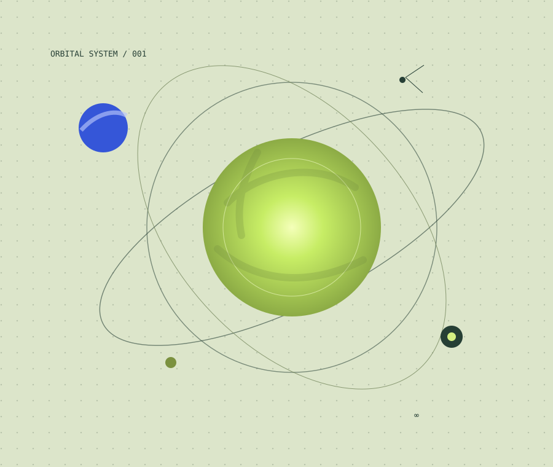
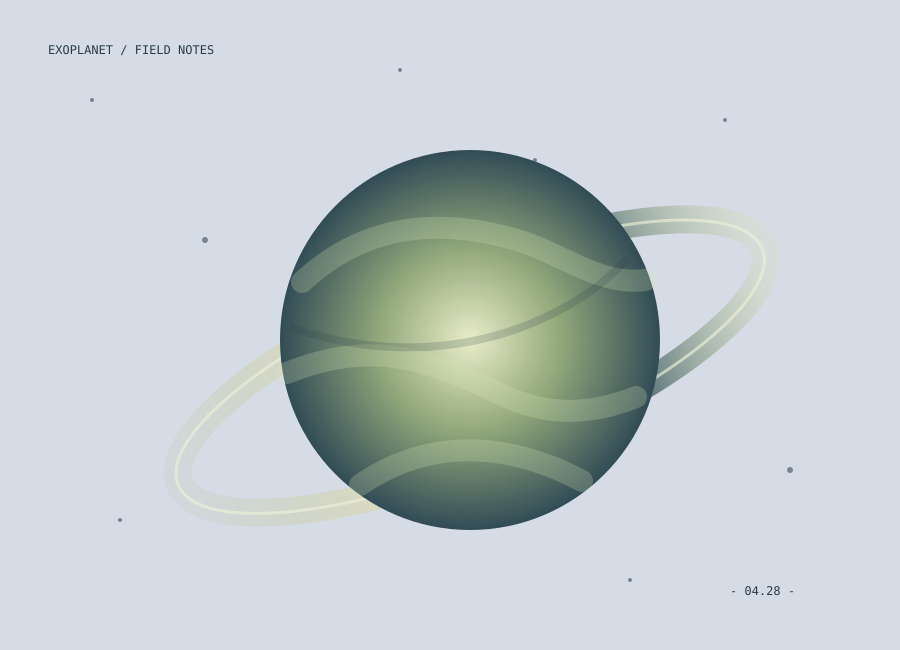

ТЕХНОЛОГИИ / 05 МИН
ТЕХНОЛОГИИ / 05 МИН
Машины учатся думать. Но понимают ли они нас?
Разбираемся, как устроены современные нейросети и почему умение отвечать ещё не означает умение понимать.
Открыть материал ↗Журнал о науке и технологиях № 01 / 2026
Исследуем идеи, открытия и технологии, которые меняют наше представление о мире.
Читать материалы↓
01 / РЕДАКЦИЯ ВЫБРАЛА
ТЕХНОЛОГИИ / 05 МИН
Разбираемся, как устроены современные нейросети и почему умение отвечать ещё не означает умение понимать.
Открыть материал ↗
КОСМОС / 04 МИНПочему спутники далёких планет стали одними из главных кандидатов в поиске внеземной жизни.
Открыть материал ↗Сложное можно объяснить понятно.
А интересное — найти повсюду.
02 / ТЕРРИТОРИЯ ИССЛЕДОВАНИЙ
От мельчайших частиц
до бесконечности космоса.
ЕСТЬ ВОПРОС ИЛИ ИДЕЯ